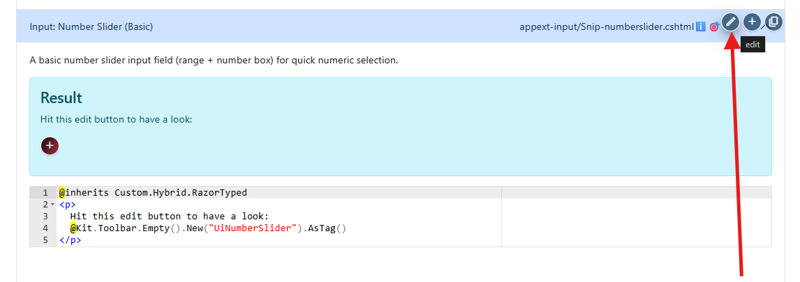
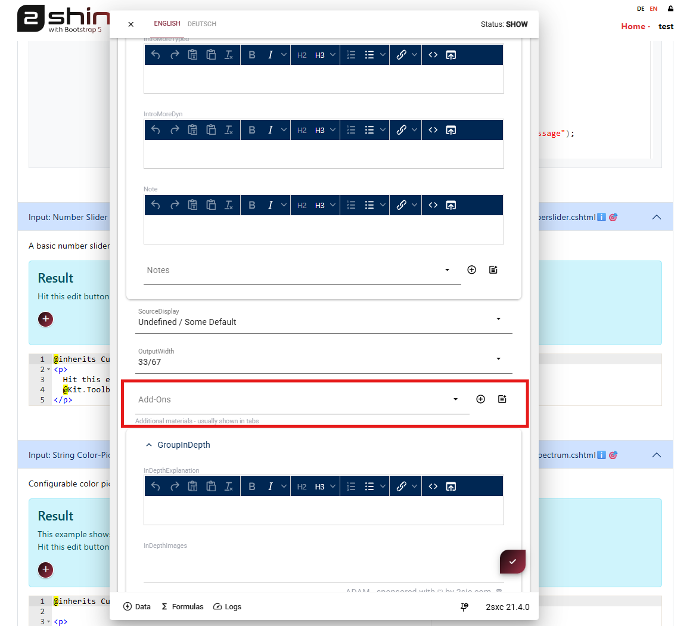
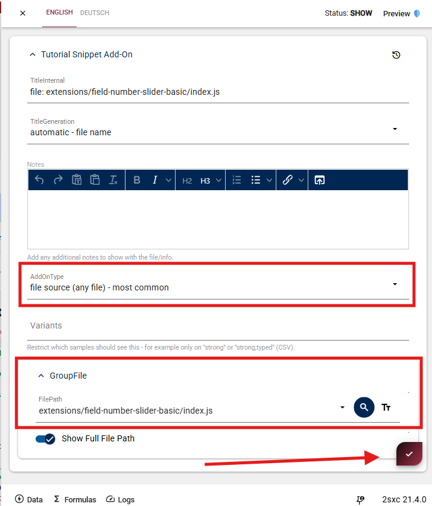
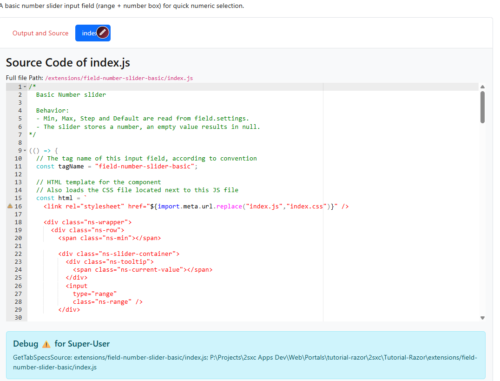

Add an extra “Source” tab using hidden comments
Each tutorial snippet automatically renders with two default tabs:
- Output: shows the rendered result
- Source: shows the code from the snippet file
Sometimes you want to show additional files such as:
- JavaScript files
- CSS files
- C# helper classes
- configuration files
- additional Razor views
These files can be added as extra tabs in the snippet output.
Edit the Snippet Section
To add a new tab, edit the snippet section in the tutorial page.

Click the edit button in the snippet area.
This opens the snippet configuration dialog.
Open the Add-Ons Section
Inside the editor dialog you will find the Add-Ons section.
This section allows you to attach additional files which will appear as tabs in the snippet output.

Add a new File Tab
Inside Add-Ons you have two options:
Select an existing file
If a file was already added before, you can simply select it from the list.
Create a new Add-On
If the file does not exist yet:
- Click the + button
- A new Add-On configuration dialog will open

Fill in the following fields.
Add-On Configuration
TitleInternal
Usually the file path to the file you want to show.
Example:
extensions/field-number-slider-basic/index.js
AddOnType
Choose the type of add-on.
The most common option is:
file source (any file)
This tells the tutorial system to load and display the file source code.
GroupFile -> FilePath
This is the path to the file inside the tutorial project.
Example:
extensions/field-number-slider-basic/index.js
use the search button to select it
Show Full File Path
Optional but recommended.
When enabled, the full file path will be displayed above the code block so users know exactly where the file lives.
Save the Add-On
After saving the configuration:
- Save the Add-On dialog
- Save the snippet editor
The new tab will now appear in the snippet output.

Result
Your snippet will now contain an additional tab showing the file source code.
Opening the tab will show the file contents directly in the documentation.
Summary
To add a new Source tab:
- Edit the snippet
- Open Add-Ons
- Add a new entry
- Select AddOnType → file source
- Provide the file path
- Save
The tutorial system will automatically generate a new tab displaying the file.